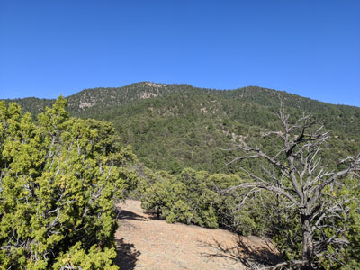
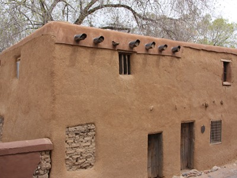
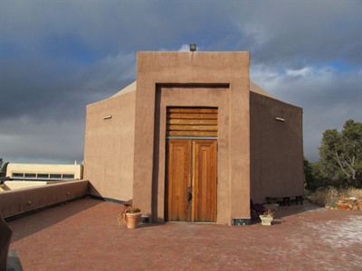
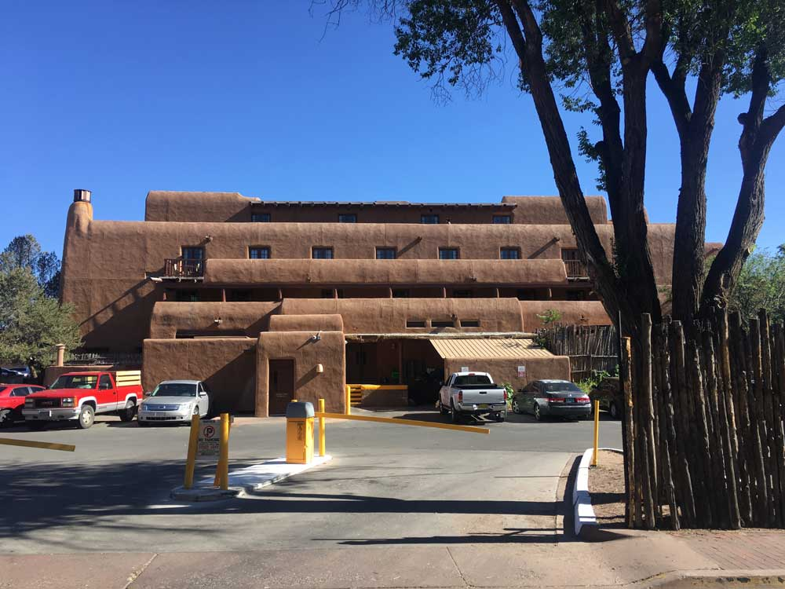
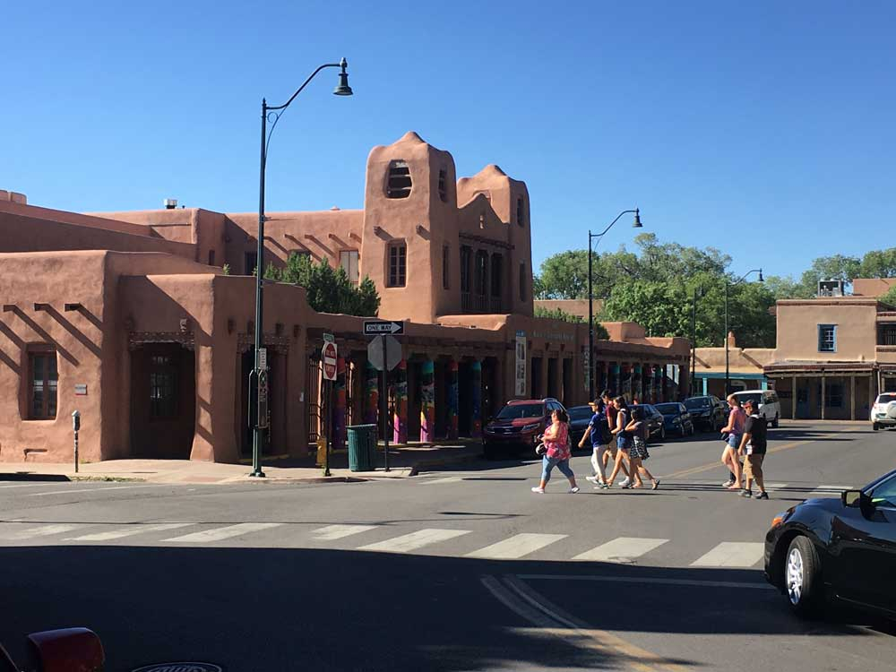

Santa Fe Travel Guide
Capital of New Mexico and founded in 1610 as the capital of Nuevo México, making it the oldest state capital in the US, it is also the state capital with the highest elevation and considered one of the world's great art cities, due to its many art galleries and installations
Top Locations


-400.jpg)

Places to See in Santa Fe

Tstock05, CC BY 4.0, via Wikimedia Commons; Image Size Adjusted


Grinnell Point and Swiftcurrent Lake from the Many Glacier Hotel
Jeff P from Berkeley, CA, USA, CC BY 2.0, via Wikimedia Commons; Image Size Adjusted
.jpg){kind=link}

Elisabeth Anne Leonard, CC BY-SA 3.0, via Wikimedia Commons; Image Size Adjusted

Grendelkhan, CC BY-SA 3.0, via Wikimedia Commons; Image Size Adjusted


John Phelan, CC BY 3.0, via Wikimedia Commons; Image Size Adjusted

Overview
Santa Fe is the capital of New Mexico and, at 7,199 feet, the highest state capital in the United States. Set at the foot of the Sangre de Cristo Mountains, it is famous for its adobe architecture, its world-class art market, its chile-rich New Mexican cuisine, and the summer Santa Fe Opera. Few American cities have so distinct an identity: the low, earth-toned buildings of the historic center, the blue sky, and the sense of three cultures, Native American, Hispanic, and Anglo, living side by side.
Visitors come to Santa Fe to browse the galleries of Canyon Road, shop for jewelry and pottery beneath the portal of the Palace of the Governors, visit its many museums, and eat at restaurants that have made the city a culinary destination. It is also a base for skiing, hiking, and day trips to Pueblo villages and national monuments. The city is the center of a large arts economy, hosting the Santa Fe Indian Market, Spanish Market, and International Folk Art Market each summer.
Santa Fe was founded around 1610 by Spanish colonists as the capital of the province of Nuevo México, making it the oldest state capital in the country. Pueblo peoples had lived in the area for centuries, and in 1680 the Pueblo Revolt drove the Spanish out until their return in 1692. After Mexico won independence in 1821, the Santa Fe Trail opened the city to American traders, and the United States took control during the Mexican–American War in 1846. New Mexico became a state in 1912, with Santa Fe as its capital. The railroad reached the city by a branch line in 1880, and a deliberate preservation of its Pueblo and Spanish Revival style from the early 1900s shaped the look of the city today.
The heart of the city is Santa Fe Plaza, where the Palace of the Governors, built in the early 1600s, is among the oldest continuously used public buildings in the country. Nearby stand the Cathedral Basilica of St. Francis of Assisi, the spiral "miraculous staircase" of the Loretto Chapel, and San Miguel Chapel, often described as the oldest church in the United States. The New Mexico State Capitol, known as the Roundhouse, is shaped like the Zia sun symbol, and Meow Wolf adds a modern, immersive attraction at the Railyard.
Santa Fe is one of the great museum towns of the Southwest. The Georgia O’Keeffe Museum holds the largest collection of the painter’s work, while Museum Hill is home to the Museum of International Folk Art, the Museum of Indian Arts and Culture, and the Wheelwright Museum of the American Indian. In the center of town, the New Mexico History Museum, the New Mexico Museum of Art, and the IAIA Museum of Contemporary Native Arts round out the offerings, along with the opera, theaters, and the annual Fiesta de Santa Fe.
Outdoor space is never far from the Plaza. The Santa Fe River Trail and the Railyard Park provide urban greenery, while Atalaya Mountain and the Dale Ball Trails climb into the foothills just east of downtown. The Santa Fe National Forest surrounds the city, with trails, campgrounds, and the Santa Fe Ski Basin about 16 miles from downtown, and Bandelier National Monument lies a short drive to the west.
Santa Fe has no major league teams. The city’s professional team is the Santa Fe Fuego, an independent baseball club that plays in the Pecos League, and most major-league-style sports fans follow the Albuquerque Isotopes, New Mexico United, and the University of New Mexico Lobos in Albuquerque, about an hour south.
Santa Fe enjoys four distinct seasons under bright, dry skies. Summers are warm, with highs in the upper 80s °F, cool evenings, and afternoon thunderstorms during the July–September monsoon. Fall brings golden aspens in the mountains and is one of the most popular times to visit. Winters are cold, with regular snowfall that supports skiing at the nearby basin, and spring is mild but often windy.
This article uses material from the Wikipedia articles Santa Fe, New Mexico, Palace of the Governors, Santa Fe Trail, which are released under the Creative Commons Attribution-Share-Alike License 3.0.

